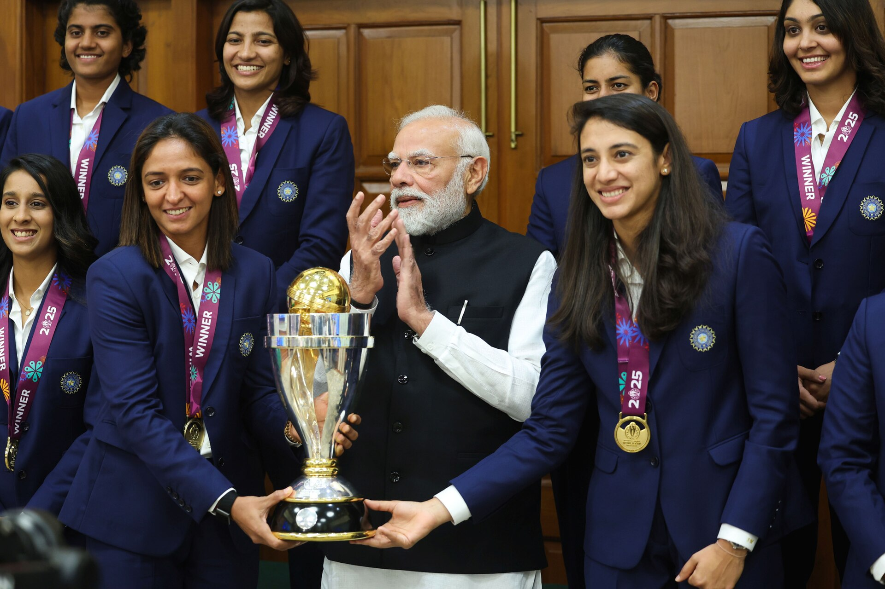

WOMEN'S CRICKET · FRONT AND CENTRE
Cricket is not just his game.
It's hers too.
India's biggest sport has another half of the story — and it deserves the spotlight. Fixtures, live links, stats and highlights for women's cricket in India and around the world.

Next Up — don't miss these
Why Her Innings?
Every fixture, one place
Indian team and international women's cricket schedules so you never find out about a match after it happened.
Know where to watch
Every event card tells you exactly which app or channel is streaming it live — no more hunting.
Player stats that matter
Batting and bowling numbers for the stars of the women's game, searchable by name and country.
Missed it? Replay it.
Direct links to official highlights of recent matches, so a busy day never means a missed match.
Upcoming Events
All times are IST. Tap Watch live on match day to jump straight to the stream.
No upcoming matches for that filter. Try another format or country!
Player Stats
Career T20I numbers for the biggest names in the women's game. Search by player or filter by country.
No players found. Try a different search.
Match Highlights
Missed a match? Catch the best moments here — straight from the official broadcasters.
No highlights found for that search.